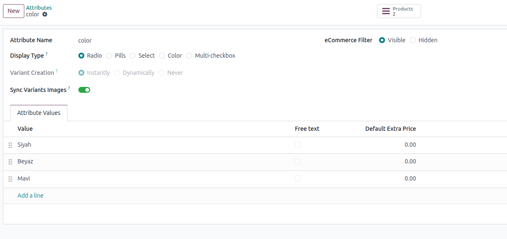

🇬🇧 English
Overview
The Product Variant Image Sync module automatically synchronizes product images
across variants that share the same attribute values. This eliminates the need to manually add
the same image to multiple variants with identical attributes.
Example: Add an image to "T-Shirt / Red / Small", and it automatically appears
on all other red T-Shirts (Medium, Large, XL), regardless of size!

✨ Features
- Automatic Image Synchronization: Add an image to one variant, and it syncs to all variants with matching attribute values
- Configurable per Attribute: Enable/disable image sync for each attribute individually using the "Sync Images" flag
- Attribute-Based Matching: Images are synced based on specific attribute values (e.g., all "Red" variants)
- Multi-Attribute Support: Works with any combination of product attributes
- Smart Detection: Only syncs to variants with identical attribute value combinations for sync-enabled attributes
- Bidirectional Sync: Updates are reflected across all matching variants automatically
- No Duplicate Images: Prevents creating duplicate images for the same variant
🎯 Use Cases
Fashion & Apparel
Add an image to T-Shirt / Small / Red
✓ Image automatically appears on "Medium / Red" and "Large / Red"
✗ Different colors maintain their unique images
Electronics
Add images to Laptop / 15 inch / Black
✓ Same images apply to all "15 inch / Black" variants with different RAM or storage
Furniture
Add images to Chair / Oak / Armrest
✓ Images sync to all oak chairs with armrests, regardless of other attributes
📦 Installation
- Download or clone the module into your Odoo addons directory
- Update the app list in Odoo (Apps → Update Apps List)
- Search for "Product Variant Image Sync" in the Apps menu
- Click the Install button
⚙️ Configuration
Enable Image Sync for Attributes
- Navigate to Sales → Configuration → Attributes
- Open or create an attribute (e.g., "Color")
- Enable the "Sync Images Across Variants" toggle
- Save the attribute
Recommended Attributes to Enable:
- ✓ Color
- ✓ Material
- ✓ Pattern
- ✗ Size (usually doesn't need sync)
- ✗ Dimensions (usually doesn't need sync)
Note: The sync only applies to attributes where the flag is enabled!
🚀 Usage
- Navigate to Sales → Products → Products
- Open a product with variants
- Switch to any variant
- Go to the Sales or Images section
- Add an image to the variant
- The image is automatically added to all variants with matching attribute values
📋 Example Workflow
Product: Athletic Shoes
Variants:
- Size 8 / Red
- Size 9 / Red
- Size 10 / Red
- Size 8 / Blue
- Size 9 / Blue
Steps:
- Open "Size 8 / Red" variant
- Add a red shoe image
- The image automatically appears on:
- ✓ Size 9 / Red
- ✓ Size 10 / Red
- Blue variants are not affected (different color attribute)
🔧 Technical Details
Models Extended:
product.attribute: Adds sync_images boolean fieldproduct.product: Adds helper methods to find variants with matching attributesproduct.image: Overrides create and write methods
How It Works:
- Image is added to a variant
- System identifies attribute values for sync-enabled attributes only
- Searches for variants with identical attribute value combinations (sync-enabled attributes only)
- Image is automatically created/updated for matching variants
Dependencies:
🇹🇷 Türkçe
Genel Bakış
Product Variant Image Sync modülü, aynı özellik değerlerine sahip ürün varyantları
arasında görüntüleri otomatik olarak senkronize eder. Bu, aynı özelliklere sahip birden fazla
varyanta aynı görseli manuel olarak ekleme ihtiyacını ortadan kaldırır.
Örnek: "Tişört / Kırmızı / Small" varyantına görsel ekleyin ve tüm diğer kırmızı
tişörtlerde (Medium, Large, XL) otomatik olarak görünsün!
✨ Özellikler
- Otomatik Görsel Senkronizasyonu: Bir varyanta görsel ekleyin, eşleşen özelliklere sahip tüm varyantlara senkronize edilir
- Özellik Başına Yapılandırılabilir: Her özellik için "Görsel Senkronize Et" bayrağını kullanarak ayrı ayrı etkinleştirin/devre dışı bırakın
- Özellik Tabanlı Eşleştirme: Görseller belirli özellik değerlerine göre senkronize edilir
- Çoklu Özellik Desteği: Herhangi bir ürün özelliği kombinasyonu ile çalışır
- Akıllı Tespit: Yalnızca senkronizasyon etkin özelliklerde aynı özellik değer kombinasyonuna sahip varyantlara senkronize eder
- Çift Yönlü Senkronizasyon: Güncellemeler tüm eşleşen varyantlara otomatik yansır
- Tekrarlanan Görsel Yok: Aynı varyant için tekrarlanan görsel oluşturmayı önler
🎯 Kullanım Senaryoları
Moda & Tekstil
Tişört / Small / Kırmızı varyantına görsel ekleyin
✓ Görsel otomatik olarak "Medium / Kırmızı" ve "Large / Kırmızı" üzerinde görünür
✗ Farklı renkler kendi benzersiz görsellerini korur
Elektronik
Dizüstü / 15 inç / Siyah varyantına görsel ekleyin
✓ Aynı görseller farklı RAM veya depolama kapasiteli tüm "15 inç / Siyah" varyantlara uygulanır
Mobilya
Sandalye / Meşe / Kolçaklı varyantına görsel ekleyin
✓ Görseller, diğer özelliklerden bağımsız olarak kolçaklı tüm meşe sandalyelere senkronize edilir
📦 Kurulum
- Modülü Odoo eklenti dizininize indirin veya klonlayın
- Odoo'da uygulama listesini güncelleyin (Uygulamalar → Uygulama Listesini Güncelle)
- Uygulamalar menüsünde "Product Variant Image Sync" arayın
- Kurulum butonuna tıklayın
⚙️ Yapılandırma
Özellikler için Görsel Senkronizasyonunu Etkinleştirme
- Satış → Yapılandırma → Özellikler menüsüne gidin
- Bir özellik açın veya oluşturun (örn. "Renk")
- "Varyantlar Arasında Görselleri Senkronize Et" anahtarını etkinleştirin
- Özelliği kaydedin
Etkinleştirmeniz Önerilen Özellikler:
- ✓ Renk
- ✓ Malzeme
- ✓ Desen
- ✗ Beden (genellikle senkronizasyon gerektirmez)
- ✗ Boyutlar (genellikle senkronizasyon gerektirmez)
Not: Senkronizasyon yalnızca bayrağın etkinleştirildiği özellikler için geçerlidir!
🚀 Kullanım
- Satış → Ürünler → Ürünler menüsüne gidin
- Varyantlı bir ürünü açın
- Herhangi bir varyanta geçin
- Satış veya Görseller bölümüne gidin
- Varyanta görsel ekleyin
- Görsel, eşleşen özellik değerlerine sahip tüm varyantlara otomatik olarak eklenir
📋 Örnek İş Akışı
Ürün: Spor Ayakkabı
Varyantlar:
- Numara 40 / Kırmızı
- Numara 41 / Kırmızı
- Numara 42 / Kırmızı
- Numara 40 / Mavi
- Numara 41 / Mavi
Adımlar:
- "Numara 40 / Kırmızı" varyantını açın
- Kırmızı ayakkabı görseli ekleyin
- Görsel otomatik olarak şuralarda görünür:
- ✓ Numara 41 / Kırmızı
- ✓ Numara 42 / Kırmızı
- Mavi varyantlar etkilenmez (farklı renk özelliği)
🔧 Teknik Detaylar
Genişletilen Modeller:
product.attribute: sync_images boolean alanı eklerproduct.product: Eşleşen özelliklere sahip varyantları bulmak için yardımcı metodlar eklerproduct.image: create ve write metodlarını optimize eder
Nasıl Çalışır:
- Bir varyanta görsel eklenir
- Sistem sadece senkronizasyon etkin özellikler için özellik değerlerini tanımlar
- Aynı özellik değer kombinasyonuna sahip varyantları arar (sadece senkronizasyon etkin özellikler)
- Görsel, eşleşen varyantlar için otomatik olarak oluşturulur/güncellenir
Bağımlılıklar: